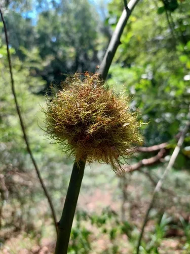

A mossy ball grows from a rose shoot
Look at where the tuft joins the shoot. A single firm, moss-covered swelling on a wild rose is characteristic of a bedeguar gall.

What to check first
A fresh gall may have yellow-green threads, pink tips or an entirely reddish coat. Look at the twig from the side to see the single attachment. Photograph a leaf and the rest of the shoot as well as the hairy surface; later in the year the same tuft can turn brown.
How to tell similar problems apart
A rose hip forms where a flower finished and has a relatively smooth, fleshy exterior. Moss roses can naturally carry sticky projections on the green parts surrounding many flower buds. Compare several shoots. A single cushion replacing ordinary growth on a species rose fits the gall more closely.
What to do now
A tiny gall wasp triggers this local change in plant tissue. On an otherwise vigorous shrub the growth can be left in place. Spraying an entire hedge after the tuft has formed will not turn it back into a normal shoot.
What to check next
Follow the healthy foliage beyond the gall rather than judging recovery by whether the old tuft disappears. If several whole canes wilt or blacken, photograph those changes separately. One local gall does not adequately explain dieback across the shrub.